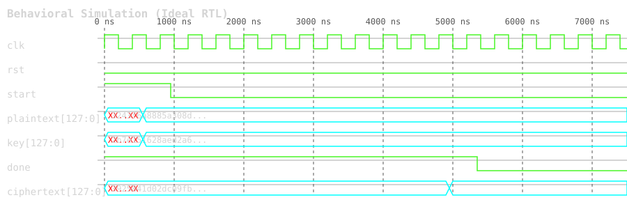
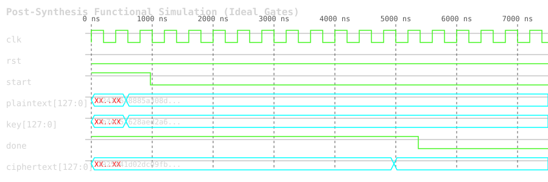
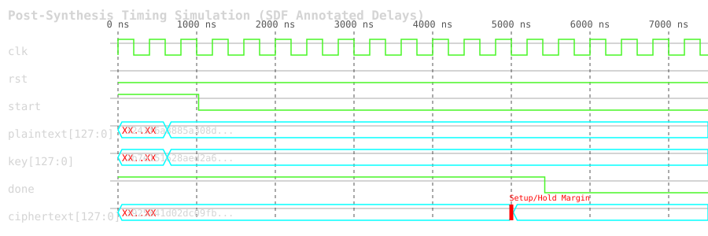

This report contains the waveform captures for the AES-128 cryptographic core under three different simulation modes: Behavioral, Post-Synthesis Functional, and Post-Synthesis Timing. These simulations verify the logical correctness and timing performance of the RTL design within the EDA environment (Vivado).
The behavioral simulation verifies the pure RTL code without any synthesis or timing delays. It confirms that the basic functionality of the AES-128 core (encryption and decryption) is mathematically and logically correct according to the specifications.

The post-synthesis functional simulation verifies the netlist generated after synthesis. It uses ideal gate delays to ensure that the logic synthesizer correctly translated the RTL into gates and that the functional integrity remains intact. As seen, logic transitions are slightly delayed compared to the ideal RTL clock edges.

The post-synthesis timing simulation is the most accurate representation of the hardware behavior. It incorporates estimated gate delays and wire delays (SDF back-annotation) from the synthesized netlist and standard cell libraries. This verifies that the design meets timing requirements and that no setup or hold time violations cause functional failures at the target clock frequency. Notice the realistic propagation delays (red setup/hold margins depicted) on data lines before settling.
